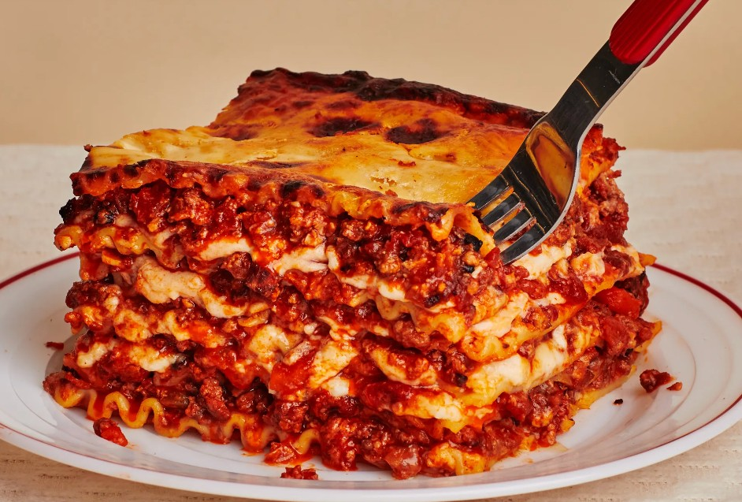

Lasagna

You will need a lot of love and a big belly to eat this.
Ingredients
- Lasagna noodles
- Ground beef
- Tomato sauce
- Ricotta cheese
- Shredded mozzarella cheese
- Parmesan cheese
- Garlic
- Onion
- Olive oil
- Salt and pepper
- Fresh basil
- Egg
- Italian seasoning
Instructions
- Preheat the oven to 375°F (190°C).
- Cook the lasagna noodles according to package instructions.
- In a skillet, heat olive oil over medium heat. Add chopped onion and minced garlic, sauté until translucent.
- Add ground beef to the skillet, cook until browned. Drain excess fat.
- Stir in tomato sauce, salt, pepper, and Italian seasoning. Simmer for 10 minutes.
- In a bowl, mix ricotta cheese, egg, and fresh basil.
- Spread a layer of meat sauce on the bottom of a baking dish. Layer noodles, ricotta mixture, mozzarella cheese, and more meat sauce. Repeat layers until all ingredients are used.
- Top with remaining mozzarella and Parmesan cheese.
- Bake in the preheated oven for 30-40 minutes or until cheese is bubbly and golden brown.
- Let it cool for a few minutes before serving.
Home